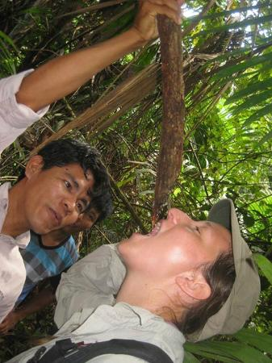
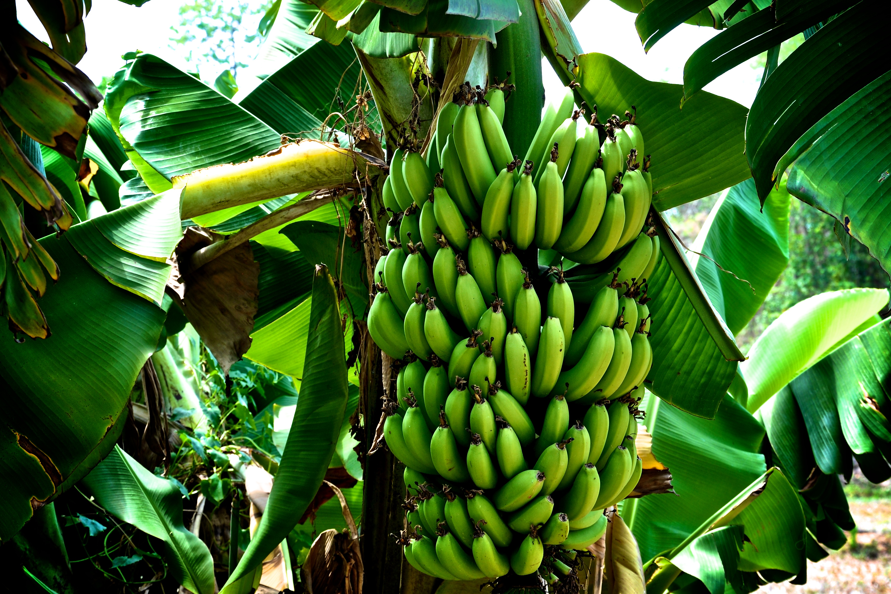
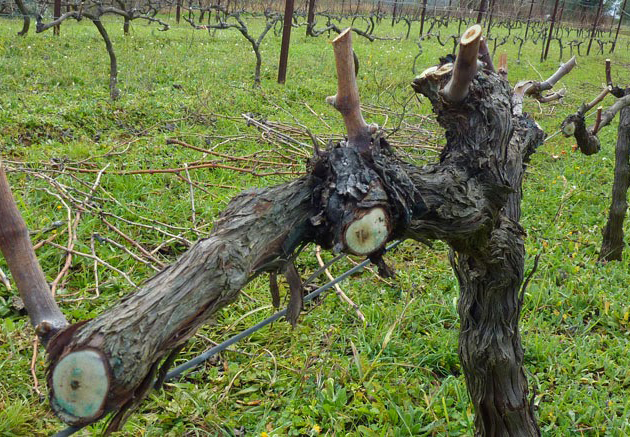
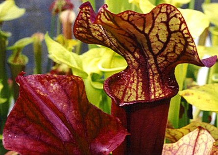
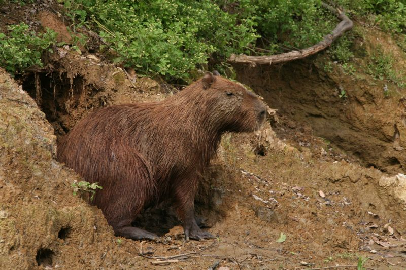
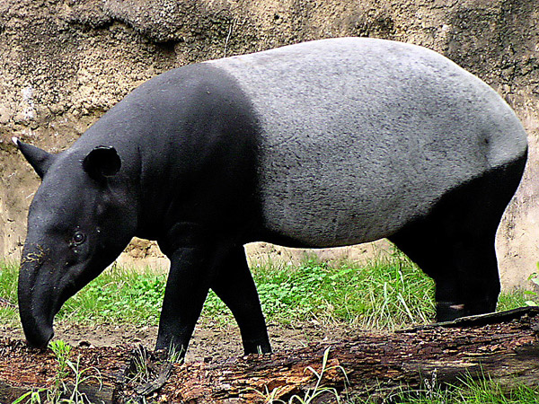

ΝΕΡΟ ΚΑΙ ΤΡΟΦΗ
Η εξεύρεση νερού στις τροπικές περιοχές λόγω των συχνών βροχοπτώσεων δεν αποτελεί δύσκολο εγχείρημα. Οι βροχές είναι συχνές και συνήθως εύκολα προβλέψιμες οπότε ο επιζήσαντας δεν θα αντιμετωπίσει κάποιο πρόβλημα υγείας λόγω έλλειψης νερού. Πέρα από την βρόχη άλλες πηγές περισυλλογής νερού είναι τα φυτά της ζούγκλας. Μερικά φυτά έχουν υψηλή περιεκτίκοτητα νερού και προσφέρουν μια πηγή ύδατος σε περιπτώσεις έκτατης ανάγκης. Άλλα περιέχουν έναν πόσιμο χυμό. Παρακάτω δίνονται μερικά παραδείγματα τέτοιων φυτών, αλλά συνιστάται να μελετάτε τα φυτά μιας ιδιαίτερης περιοχής πριν την επισκεφθείτε. Να έχετε υπόψη ότι μερικά φυτά είναι δηλητηριώδη. Δεν πρέπει να πίνετε από φυτά που περιέχουν γαλακτώδη ή χρωματιστό χυμό (οι δυο εξαιρέσεις του κανόνα αυτού - οι καρύδες και ο αμερικάνικος κυλινδρικός κάκτος).
Πολλά φυτά των τροπικών περιοχών ενεργούν ως υδροδοχεία, συλλέγοντας το νερό της βροχής ή την υγρασία της ατμόσφαιρας. Προσπαθήστε να κουνήσετε κοίλους παλαιούς κορμούς μπαμπού για να διαπιστώσετε με την ακοή σας αν υπάρχει νερό μέσα. Αν, πράγματι, διαπιστώσετε την ύπαρξη νερού, τρυπήστε τον κορμό προσεκτικά ακριβώς πάνω από κάθε αρμό και αφήστε το νερό να χυθεί έξω.
Οι βρομέλιες, οι οποίες αποτελούν μέρος της οικογένειας των ανανάδων που φύονται στην τροπική ζώνη της Αμερικής, συλλέγουν νερό στα φύλλα τους. Παραδείγματα άλλων φυτών που κρατούν ή συλλέγουν νερό είναι η αδανσονία της Αφρικής και της Βόρειας Αυστραλίας και η μανόλια της τροπικής Δυτικής Αφρικής.
Φυτικές Πηγές
Μπανανόδεντρα - Τα μπανανόδεντρα παρέχουν μεγάλες ποσότητες καλού πόσιμου νερού. Κόψτε το δέντρο, κατά προτίμηση, πριονίζοντας τον κορμό του σε ύψος 30 εκ. πάνω από το έδαφος. Τοποθετήστε το μαχαίρι σας στο μέσο του εναπομείναντος κορμού με τη λεπίδα υπό γωνία 45 μοιρών και σκάψτε την επιφάνεια του ώστε να σχηματιστεί ένα κοίλωμα σαν κύπελλο. Θα διαπιστώσετε ότι το νερό θα αρχίζει να γεμίζει το κοίλωμα, καθώς ακόμη θα σκάβετε τον κορμό.
Κληματα - Ορισμένα κλήματα παρέχουν επίσης πόσιμο νερό. Το νερό απο τα κλήματα είναι συνήθως διαυγέστατο και γλυκό. Αν το υγρό έχει σκούρο χρώμα και προκαλεί ερεθισμό στο στόμα, σταματήστε αμέσως καθώς μπορεί να είναι ένδειξη δηλητηρίου.
Σαρρακηνία - Το φυτό αυτό απαντιέται σε όλη τη νοτιοανατολική Ασία. Είναι αναρριχητικό και περιορίζεται κυρίως στις ορεινότερες περιοχές. Τα χαμηλά αυτά φυτά περιέχουν αρκετή μεγάλη ποσότητα νερού, αλλά λόγω της εντομοφάγου φύσεως των, το νερό πρέπει να το βράσετε πριν το καταναλώσετε.
Το περιβάλλον των τροπικών περιοχών είναι πλούσιο σε φυτική και ζωική ζωή. Τα φαγώσιμα ζώα περιλαμβάνουν πιθήκους, αγριογούρουνα, πουλιά και τρωκτικά. Οι φρύγοι (είδος βατράχων) και οι σαλαμάνδρες είναι επίσης φαγώσιμα ζώα, αλλά έχουν αδένες στο δέρμα τους που πρέπει να αφαιρούνται πρώτα. Τα ψάρια αφθονούν στις τροπικές περιοχές, όπως και τα διάφορα θαλασσινά (στρείδια, μύδια, καβούρια κλπ) στα έλη και στις παράκτιες περιοχές. Στα φαγώσιμα φυτά περιλαμβάνονται οι άγριες μπανάνες, τα τροπικά φρούτα, οι διοσκορίες (είδος τροπικών φυτών που μοιάζουν με κλήματα), ο αρτόκαρπος και η κολοκασία (τροπικό φυτό με βολβώδεις ρίζες).
Η ικανότητα παρατήρησης του ίχνους που αφήνει το πέρασμα ενός ζώου είναι πολύτιμη επιδεξιότητα σε μια τροπική περιοχή. Παρά τα πυκνά φυλλώματα των τροπικών δασών, τα ίχνη των ζώων επισημαίνονται εύκολα στη λάσπη, στις κοίτες χειμάρρων, σε μονοπάτια και σε κοντινούς νερόλακκους (γούρνες όπου τα ζώα πηγαίνουν για να πιούν νερό).Όταν τα ζώα μετακινούνται, συνήθως είναι είτε για να βρουν τροφή και νερό ή για βρουν κάποιο μέρος για ύπνο. Τα ίχνη των ζώων θα σας δώσουν πληροφορίες για την κατεύθυνση της κίνησης των, καθώς επίσης και μια ένδειξη του όγκου τους.
Γιγαντιαίος Καπιβάρας (Giant Capibara) - Το φυτοφάγο αυτό ζώο, το μεγαλύτερο της οικογένειας των τρωκτικών, με μήκος 60 εκ. και βάρος 45 χγρ., ζει σε μεγάλες ομάδες στις όχθες των ποταμών της Νότιας Αμερικής. Είναι ζώο ημιυδρόβιο, που συνήθως καταδύεται στο νερό με τον πρώτο κίνδυνο. Το τρίχωμα του είναι κοντό, τραχύ και ανοικτού χρώματος, αλλά οι καπιβάροι που ζουν σε ψυχρότερες περιοχές έχουν συνήθως μακρύτερο και πυκνότερο τρίχωμα. Παρόλο που το ζώο διατηρεί ακόμα τα χαρακτηριστικά αρουραίου, το πρόσωπο του είναι πλατύτερο, τα αυτιά και η ουρά είναι μικρά και τα πόδια του είναι ελαφρώς μεμβρανοποιημένα. Τα τρωκτικά συνήθως ακούγονται πριν εμφανιστούν, δεδομένου ότι επικοινωνούν με γρυλίσματα, διαπεραστικούς ήχους και ξηρούς θορύβους.
Τάπιρος (Tapir) - Ο τάπιρος είναι ακίνδυνο φυτοφάγο ζώο που απαντιέται στην Μαλαισία, τη Μαλαισία, τη Σουμάτρα και στην κεντρική και τη Νότιο Αμερική. Το σώμα του μοιάζει με το σώμα χοίρου, το μήκος συχνά υπερβαίνει τα δυο μέτρα και το βάρος του φτάνει μέχρι τα 250 χγρ. Το παχύ δέρμα του καλύπτεται με κοντό, τραχύ τρίχωμα. Τα ζώα αυτά, τα οποία ζουν σε ελώδεις ή γύρω από ελώδεις περιοχές, κοιμούνται την ημέρα και αναζητούν την τροφή τους κατά την νύχτα. Είναι ικανοί κολυμβητές και, όταν καταδιώκονται, επιζητούν ασφάλεια σε βαθιά νερά.